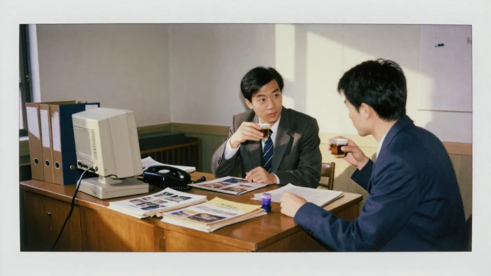
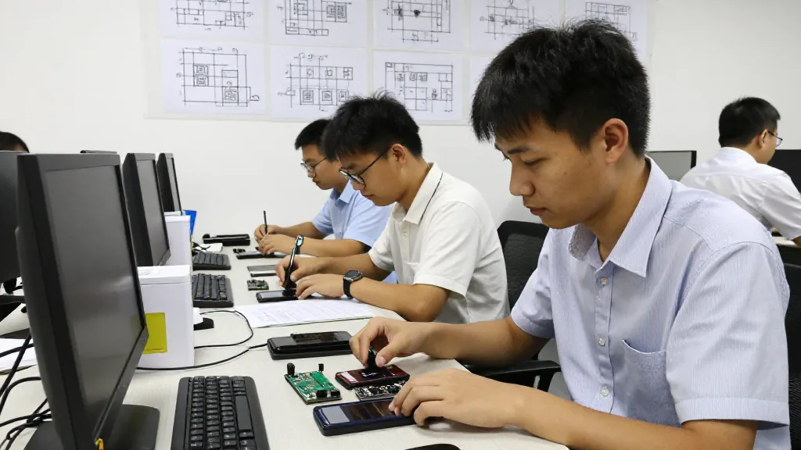
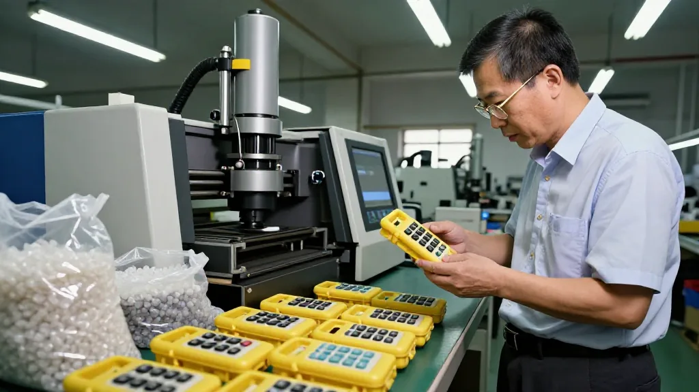
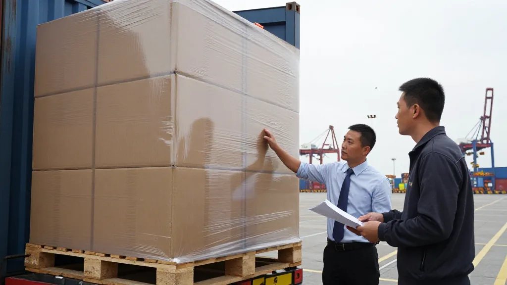

【鄭哥點評】 欄目：鄭哥博客點評
《用心交朋友，才能把訂單做完》

圖片由 AI輔助創作（Z-Image-Turbo）
鄭哥 Hany · 2026 年 9 月 22 日
——一段 2009 年嘅外貿往事
2009 年，廣州越秀區江灣公司。我哋同德國客戶 WTS 嘅老人機項目，就係從呢度開始嘅。
WTS 嘅股東係 Frank 同 Dick，總部喺德國斯圖加特，主要做老人機，市場喺德國南部同奧地利。合作初期，Frank 派咗一名員工到我哋公司，一住就兩三個月。嗰段時間，我同佢一齊參與呢個項目。佢慢慢融入我哋當地嘅文化，同我哋一齊開發、一齊解決問題。
一、2009 年嘅老人機市場

圖片由 AI輔助創作（Z-Image-Turbo）
嗰陣時，諾基亞、愛立信嘅細機仲未做到最平，深圳山寨機反而好多，三碼機、五碼機比較多，佔領咗一部分市場。但客戶要求把老人機做到四頻，呢個喺當時非常唔簡單。
GSM 850 / 900 / 1800 / 1900 MHz — 四個頻段，必須同時支持
Frank 派過嚟嗰位員工，日頭同我哋一齊去華強北搵零件，去深圳公明搵工廠；夜晚一齊食腸粉飲涼茶。佢慢慢識講幾句廣東話——「唔該」「多謝」「靚女」，餐廳老闆娘都笑到花枝亂墜。
嗰一年，外貿環境仲未完全從 2008 年金融海嘯中恢復，但客戶仍然堅持要把呢部老人機做到「德國 TÜV 認證、歐盟 CE、德語菜單」嘅規格。山寨機做唔到呢啲標準，我哋就係喺呢個縫隙入面搵到位置。
二、深圳陶總嘅工廠

圖片由 AI輔助創作（Z-Image-Turbo）
為咗配合佢哋，我哋採取咗好多方案，反覆驗證，開模都投入咗唔少錢。配合嘅工廠喺深圳，係陶總嘅公司。
陶總以前從波導出嚟，嗰一幫人同後來傳音嘅 竺兆江，當年都係同事。
呢條「波導幫」嘅人脈網絡，係嗰個年代中國手機產業鏈嘅縮影——從波導，到深圳華強北，到非洲傳音，到東南亞 Vsmart。我哋就喺呢條鏈條上面，做德國市場。
雙方經過好耐嘅配合，終於把四頻老人機方案做咗出嚟。陶總嗰陣成日同我哋通電話：「鄭哥，呢批注塑模嘅啤出嚟啦，你叫人嚟睇下。」我哋就即刻飛過去深圳，喺工廠車間度逐部機測試、逐粒鍵盤撳過。
三、首批 500K 訂單

圖片由 AI輔助創作（Z-Image-Turbo）
產品出嚟之後，客戶好開心，即刻推到德國市場。首批訂單係 500K，即係 50 萬台。
佢哋喺德國渠道銷售，亦賺到錢。直到今日，我哋都仲有來往。
嗰個年代，50 萬台係大單。我哋工廠三班倒趕工，嗰一年聖誕前夕，全部發咗出去。Frank 喺斯圖加特寫咗張卡寄過嚟：
「Hany, you are not only our supplier. You are our friend. — Frank」
嗰張卡，我到今日都仲留住。
四、呢個故事嘅真正意義
圖片由 AI輔助創作（Z-Image-Turbo）
呢段經歷，我記落嚟，唔係為咗炫耀一個訂單。
我更想講嘅係：做外貿，基礎就係用心對待每一個客人，用心同佢哋交朋友。
客戶願意派人駐廠兩三個月，係信任。我哋願意陪住佢一齊開模、試方案、改產品，係誠意。跨文化融合之後，溝通順咗，再難嘅產品都可以一齊做出嚟。
首批 500K 當然重要，但比 500K 更珍貴嘅，係「到今日都仲有來往」。
五、外貿人嘅三條金句
訂單是一時嘅，信任是一輩子嘅。
你真心幫客戶解決問題，客戶先願意把訂單交俾你，甚至願意同你一齊承擔開發風險。訂單做完唔係終點，長期來往先至係。
客戶唔係 ATM，係朋友。
如果一個客戶只係你嘅 ATM，你抽完錢就走，咁你永遠都係單次交易。如果你當佢係朋友，過年過節寄份小禮物、新產品出咗第一時間通知、行業有風吹草動提早講——咁十年之後，佢仲記得你。
用心交朋友，才能把訂單做完。
呢句話，係我做咗 26 年外貿嘅基礎。唔係話術，唔係雞湯，係用一張張訂單、一次次通宵、一次交歉意累返嚟嘅經驗。
六、寫俾同行嘅 3 條建議
建議 1：派駐員工唔好嫌煩
客戶派人駐廠兩三個月，表面睇係好大嘅接待成本。但其實，呢個先係建立信任嘅最短距離。你陪佢食餐飯、飲杯茶、行吓街，呢啲細節，比一份 PPT 更有說服力。
建議 2：開模嗰陣預咗會輸
2009 年嗰次四頻老人機方案，我哋開咗三次模、燒咗幾十萬。如果只睇 ROI，你會話「呢單生意唔值得做」。但係，呢三次失敗嘅模，累積咗嘅係客戶對你技術能力嘅信心，係下次再有難題時客戶第一時間諗起你。
建議 3：人物網絡比訂單重要
陶總、波導幫、竺兆江、Frank、Dick——呢啲名字，係我嘅「外貿寶藏」。訂單會完結，產品會過時，但人脈網絡永遠保值。十年之後，你仲可以靠呢條網絡接到新單；十年之後，你嘅舊客戶可能已經由第二代接手，但佢仲記得你父親嗰一代嘅友誼。
七、海豐人嘅外貿味
講到呢度，我哋海豐人嘅外貿味，唔係咖啡——係功夫茶。
細個喺海豐老屋睇我阿爸招呼客人，永遠都係先沖一壺鳳凰單叢，傾兩句閒話，再入正題。客人走嘅時候，阿爸會送到門口，講句「得閒再來飲茶」——呢句話，就係海豐人嘅「後續合作」承諾。
後來我做外貿，先至明白：呢個就係最原始嘅 CRM。
訂單一時，信任一輩子。
用心交朋友，才能把訂單做完。
呢個，就係外貿人嘅基礎。
📞 合作聯繫
WhatsApp: +852 6641 7912
七善門科技 · 星辰算力
💬 你嘅第一個外貿客戶係邊個？
評論區講下你嘅故事 👇
#用心交朋友 #外貿故事 #老人機 #WTS #Frank #Dick #廣州越秀 #深圳工廠 #陶總 #傳音 #竺兆江 #波導 #四頻 #德國市場 #2009年外貿 #外貿老炮兒 #海豐功夫茶 #跨文化合作
[ZHENG GE REVIEW] Column: Hany Blog Review
"Trade Begins With Friends, Not Orders"
Image AI-assisted (Z-Image-Turbo)
Hany Zheng Ge · September 22, 2026
— A foreign-trade memory from 2009
In 2009, our Yuexiu office in Guangzhou. The senior-phone project with our German customer WTS began right here.
WTS's shareholders were Frank and Dick, headquartered in Stuttgart, Germany. They focused on senior phones for the southern German and Austrian markets. Early in the partnership, Frank sent an employee to our office — he stayed two or three months. We worked on the project together. He gradually picked up our local culture, developed with us, solved problems with us.
1. The 2009 Senior-Phone Market
Image AI-assisted (Z-Image-Turbo)
Back then, Nokia and Ericsson handsets hadn't yet hit their lowest prices, and Shenzhen's "Shanzhai" market was huge — three-code, five-code machines dominated part of the segment. But the customer demanded quad-band on the senior phones — a tough spec at the time.
GSM 850 / 900 / 1800 / 1900 MHz — all four bands required.
Frank's staffer spent his days with us: hunting parts at Huaqiangbei, sourcing tooling at Shenzhen Gongming, and at night eating cheung fun and sipping herbal tea. He gradually picked up some Cantonese — "唔該," "多謝," "靚女" — the restaurant owner laughed till the flowers fell.
That year, foreign trade hadn't fully recovered from the 2008 financial crisis, yet the customer still insisted on German TÜV certification, EU CE, and a German-language UI. Shanzhai couldn't deliver — and that gap was where we fit.
2. Mr. Tao's Shenzhen Factory
Image AI-assisted (Z-Image-Turbo)
To meet their requirements we tried many approaches, iterated constantly, and burned serious money on tooling. The partner factory was Mr. Tao's company in Shenzhen.
Tao had come out of Bird (波導); that whole crowd were former colleagues of Zhu Zhaojiang — who would later found Tecno (传音).
That "Bird alumni" network was a snapshot of China's handset chain back then — from Bird, to Shenzhen Huaqiangbei, to Tecno in Africa, to Vsmart in Vietnam. We were on that chain, supplying Germany.
After a long collaboration, the quad-band senior-phone spec finally came together. Mr. Tao would call constantly: "Hany, the molds are out — come take a look." We'd fly to Shenzhen, test every unit, press every key.
3. The First 500K Order
Image AI-assisted (Z-Image-Turbo)
When the product landed, the customer was thrilled and pushed it straight to the German market. The first order was 500K — 500,000 units.
They sold it through their German channels and made money. To this day, we are still in touch.
Back then, 500K was a big order. Three shifts ran non-stop; everything shipped before Christmas. Frank mailed a card from Stuttgart:
"Hany, you are not only our supplier. You are our friend. — Frank"
I still have that card.
4. What This Story Really Means
Image AI-assisted (Z-Image-Turbo)
I write this down not to show off an order.
What I want to say is: in foreign trade, the foundation is treating every customer with heart and making friends with them.
The customer willing to send staff to live at our factory for two or three months — that is trust. Our willingness to mold, test, and iterate alongside them — that is sincerity. Once cultures meet, communication flows, and even the toughest products can be built together.
The first 500K matters, of course — but what matters more is "we are still in touch today."
5. Three Lines for Traders
Orders are one-time; trust is for life.
When you sincerely solve a customer's problem, they'll entrust you with orders — and even share development risk. Finishing an order isn't the finish line; staying in touch long-term is.
A customer is not an ATM. A customer is a friend.
If a customer is just your ATM, you'll drain it and walk away, and you'll be stuck in one-off deals forever. Treat them as friends — send a small gift at the holidays, share your new products first, warn them about industry shifts — and a decade later, they'll still remember you.
Trade begins with friends, not orders.
This line is the foundation of my 26 years in foreign trade. Not a slogan, not chicken soup — it's earned through countless orders, all-nighters, and apologies.
6. Three Notes for Fellow Traders
Note 1: Don't Dread the Visiting Staffer
A customer sending staff to your factory for two or three months looks like a hosting cost. In reality, this is the shortest distance to trust. Eat with them, drink tea with them, walk the streets with them — those small moments convince more than any PPT.
Note 2: Expect to Lose on the First Mold
For that 2009 quad-band project, we burned three molds and hundreds of thousands of RMB. By pure ROI, you'd say "this deal isn't worth it." But those three failed molds built the customer's confidence in your technical ability — and ensured that next time there's a hard problem, they think of you first.
Note 3: People Networks Outlive Orders
Mr. Tao, the Bird alumni, Zhu Zhaojiang, Frank, Dick — these names are my "foreign-trade treasure." Orders end, products go obsolete, but people networks always retain value. A decade on, you can still land new deals through that network; a decade on, your old customers' second generation may be running the show, but they still remember the friendship you built with their parents.
7. A Haifeng Person's Foreign-Trade Flavor
Speaking of which, for us Haifeng people the foreign-trade flavor isn't coffee — it's gongfu tea.
As a kid, watching my father welcome guests at the old Haifeng house, he always brewed a pot of Phoenix Dancong first, exchanged a few pleasantries, then got down to business. When the guest left, he'd walk them to the door and say "come back for tea when you're free" — that sentence is the Haifeng person's commitment to "follow-up business."
Only later, in foreign trade, did I realize: this is the original CRM.
Orders are one-time; trust is for life.
Trade begins with friends, not orders.
This is the foundation of being in foreign trade.
📞 Get in touch
WhatsApp: +852 6641 7912
Qishanmen Tech · Star Compute
💬 Who was your very first foreign-trade customer?
Share your story in the comments 👇
#TradeBeginsWithFriends #ForeignTradeStory #SeniorPhones #WTS #Frank #Dick #GuangzhouYuexiu #ShenzhenFactory #MrTao #Tecno #ZhuZhaojiang #Bird #QuadBand #GermanMarket #2009ForeignTrade #ForeignTradeVeteran #HaifengGongfuTea #CrossBorderFriendship